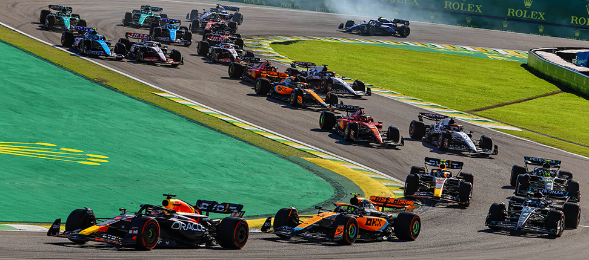

A Fórmula 1 – carinhosamente conhecida como F1 – é uma modalidade de
corrida automobilística que envolve carros de alta performance projetados para atingir
velocidades superiores a 350 km/h.
A Fórmula 1 é considerada a principal categoria do automobilismo. Disputada desde
1950, ela se diferencia por ser um campeonato em que cada equipe tem que construir
o próprio carro. Por conta disso, atrai tecnologia de ponta e a maioria dos melhores
pilotos do mundo.
A Fórmula 1 foi criada em 1950, com o objetivo de padronizar as corridas de monopostos
de alta velocidade. O primeiro Grande Prêmio oficial da Fórmula 1 aconteceu no circuito
de Silverstone, na Inglaterra, em 13 de maio de 1950.
Essa corrida marcou o início de uma nova era no automobilismo, atraindo fabricantes como
Alfa Romeo, Ferrari e Maserati, que rapidamente se destacaram. O argentino This link will
trigger a popup message.Juan Manuel FangioThis link will trigger a popup message. foi um
dos primeiros grandes campeões, conquistando cinco títulos mundiais na década de 1950,
estabelecendo um padrão de excelência que seria seguido por futuras gerações.
Com o passar das décadas, a F1 evoluiu significativamente, com os avanços aerodinâmicos e
o uso de materiais mais leves transformaram os carros, tornando-os mais rápidos e seguros.
E, continuam a melhorar suas mecânicas ano após ano até os dias atuais.
Ao longo das décadas, grandes nomes ajudaram a moldar a história da F1. Pilotos como Juan
Manuel Fangio, Niki Lauda, Ayrton Senna e Michael Schumacher tornaram-se lendas, cada um
contribuindo com sua própria marca e estilo de pilotagem.